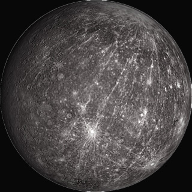
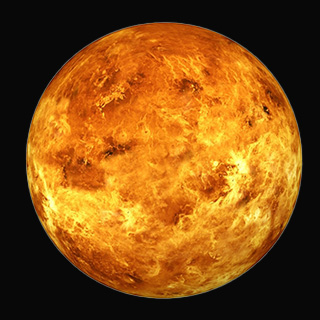
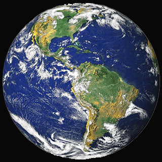
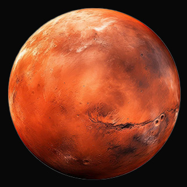
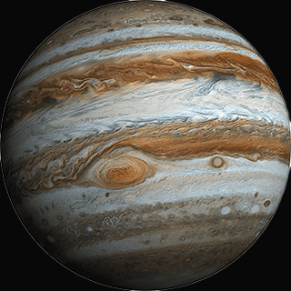
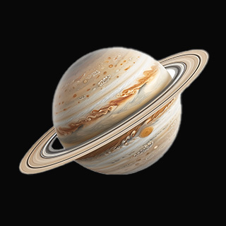
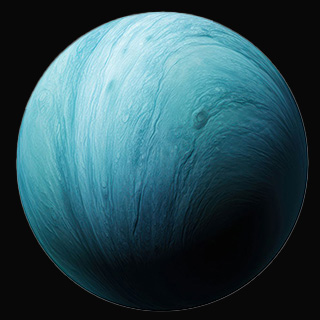
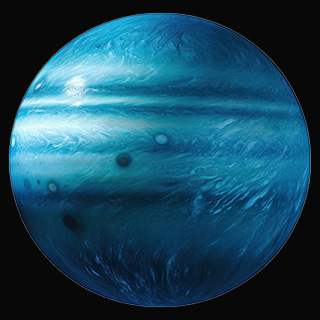

| PLANETS | |||||
|---|---|---|---|---|---|
| S.no. | PLANET NAME | IMAGE | TYPE | DIAMETER(approx.). | DISTANCE FROM SUN(approx.) |
| 1 | Mercury |  | Terrestrial(Rocky) | 4,880 km | 57.9 million km |
| 2 | Venus |  | Terrestrial(Rocky) | 12,104 km | 108.2 million km |
| 3 | Earth |  | Terrestrial(Rocky) | 12,742 km | 149.6 million km |
| 4 | Mars |  | Terrestrial(Rocky) | 6,779 km | 227.9 million km |
| 5 | Jupiter |  | Gas Giant | 139,820 km | 778.5 million km |
| 6 | Saturn |  | Gas Giant | 116,460 km | 1.4 billion km |
| 7 | Uranus |  | Ice Giant | 50,724 km | 2.9 billion km |
| 8 | Neptune |  | Ice Giant | 49,244 km | 4.5 billion km |